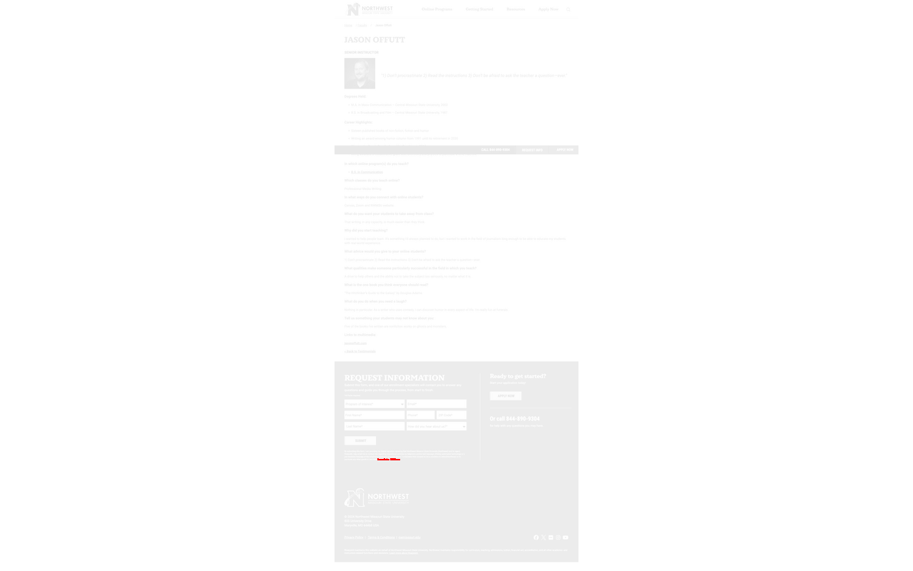
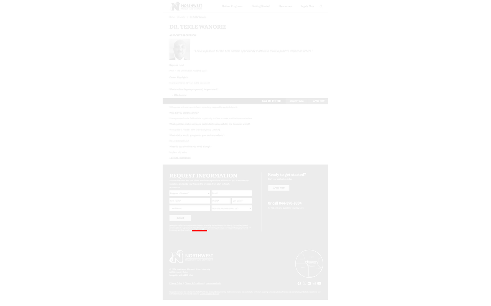
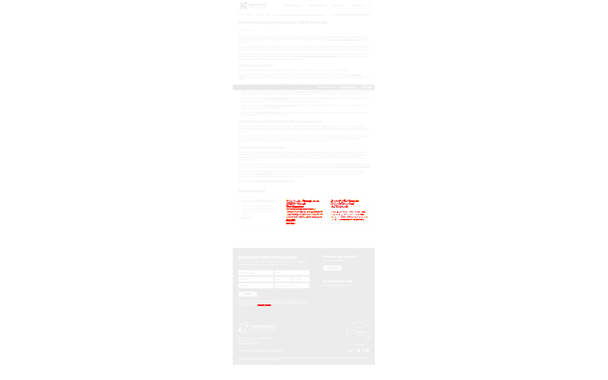
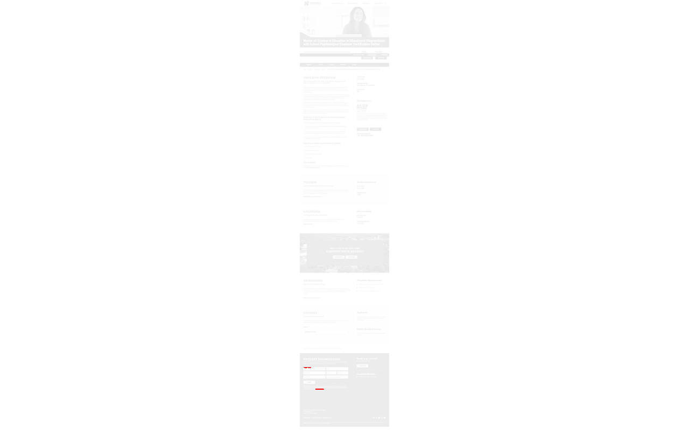
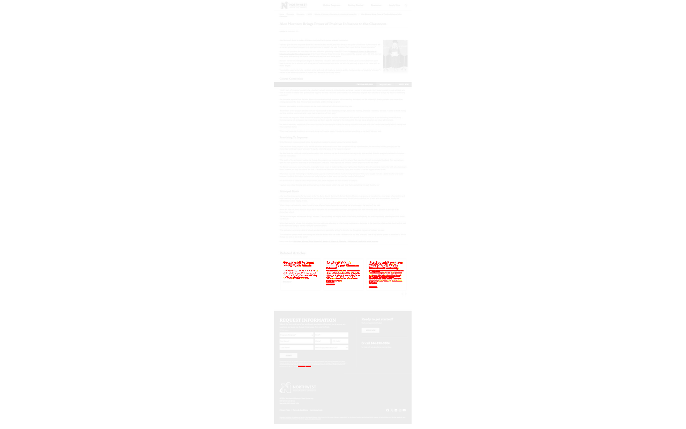
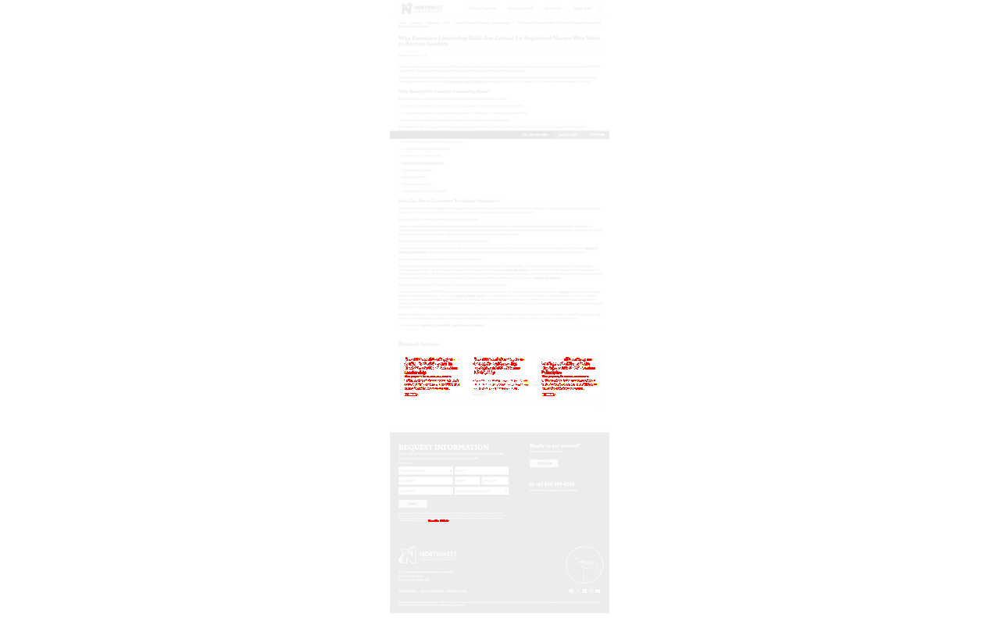

Total Pages Tested: 489
Passed: 5
Failed: 484
Errors: 0
| Page | Similarity | Status | Thumbnail |
|---|---|---|---|
| / | 99.99% | Fail | |
| /about/ | 99.99% | Fail | |
| /accreditation-and-accolades/ | 99.99% | Fail | |
| /admissions/ | 99.99% | Fail | |
| /apply | 100.00% | Pass | |
| /apply?calculator=true&d=ASU-A-GS | 100.00% | Pass | |
| /apply?d=NWMISSOURI-B-BAS&calculator=true | 99.98% | Fail | |
| /apply?d=NWMISSOURI-B-BSACCT&calculator=true | 99.98% | Fail | |
| /apply?d=NWMISSOURI-B-BSACCTPUB&calculator=true | 99.98% | Fail | |
| /apply?d=NWMISSOURI-B-BSBUSMGMT&calculator=true | 99.00% | Fail | |
| /apply?d=NWMISSOURI-B-BSBUSTECH&calculator=true | 99.98% | Fail | |
| /apply?d=NWMISSOURI-B-BSCOM&calculator=true | 99.02% | Fail | |
| /apply?d=NWMISSOURI-B-BSCRIM&calculator=true | 99.98% | Fail | |
| /apply?d=NWMISSOURI-B-BSFIN&calculator=true | 99.98% | Fail | |
| /apply?d=NWMISSOURI-B-BSGS&calculator=true | 99.98% | Fail | |
| /apply?d=NWMISSOURI-B-BSHRMGMT&calculator=true | 98.98% | Fail | |
| /apply?d=NWMISSOURI-B-BSMISCBRSEC&calculator=true | 98.93% | Fail | |
| /apply?d=NWMISSOURI-B-BSMISDATAANLTCS&calculator=true | 99.98% | Fail | |
| /apply?d=NWMISSOURI-B-BSMKT&calculator=true | 99.98% | Fail | |
| /apply?d=NWMISSOURI-B-BSPOLITSCIAMERINST&calculator=true | 98.96% | Fail | |
| /apply?d=NWMISSOURI-B-BSPOLITSCIGLBLAFF&calculator=true | 99.98% | Fail | |
| /apply?d=NWMISSOURI-B-BSPOLITSCIMIN&calculator=true | 98.98% | Fail | |
| /apply?d=NWMISSOURI-B-BSPOLITSCIPA&calculator=true | 99.98% | Fail | |
| /apply?d=NWMISSOURI-B-BSPYCH&calculator=true | 99.98% | Fail | |
| /apply?d=NWMISSOURI-B-BSSOCI&calculator=true | 99.03% | Fail | |
| /apply/ | 100.00% | Pass | |
| /apply/?calculator=true&d=NWMISSOURI-B-BAS | 99.98% | Fail | |
| /apply/?calculator=true&d=NWMISSOURI-B-BSACCT | 99.98% | Fail | |
| /apply/?calculator=true&d=NWMISSOURI-B-BSACCTPUB | 99.98% | Fail | |
| /apply/?calculator=true&d=NWMISSOURI-B-BSBUSMGMT | 99.00% | Fail | |
| /apply/?calculator=true&d=NWMISSOURI-B-BSBUSTECH | 99.98% | Fail | |
| /apply/?calculator=true&d=NWMISSOURI-B-BSCOM | 99.02% | Fail | |
| /apply/?calculator=true&d=NWMISSOURI-B-BSCRIM | 99.98% | Fail | |
| /apply/?calculator=true&d=NWMISSOURI-B-BSFIN | 99.98% | Fail | |
| /apply/?calculator=true&d=NWMISSOURI-B-BSGS | 99.98% | Fail | |
| /apply/?calculator=true&d=NWMISSOURI-B-BSHRMGMT | 98.98% | Fail | |
| /apply/?calculator=true&d=NWMISSOURI-B-BSMISCBRSEC | 98.93% | Fail | |
| /apply/?calculator=true&d=NWMISSOURI-B-BSMISDATAANLTCS | 99.98% | Fail | |
| /apply/?calculator=true&d=NWMISSOURI-B-BSMKT | 99.98% | Fail | |
| /apply/?calculator=true&d=NWMISSOURI-B-BSPOLITSCIAMERINST | 98.96% | Fail | |
| /apply/?calculator=true&d=NWMISSOURI-B-BSPOLITSCIGLBLAFF | 98.98% | Fail | |
| /apply/?calculator=true&d=NWMISSOURI-B-BSPOLITSCIMIN | 99.98% | Fail | |
| /apply/?calculator=true&d=NWMISSOURI-B-BSPOLITSCIPA | 99.98% | Fail | |
| /apply/?calculator=true&d=NWMISSOURI-B-BSPYCH | 99.98% | Fail | |
| /apply/?calculator=true&d=NWMISSOURI-B-BSSOCI | 99.98% | Fail | |
| /apply/?d=NWMISSOURI-B-BAS | 99.98% | Fail | |
| /apply/?d=NWMISSOURI-B-BSACCT | 99.00% | Fail | |
| /apply/?d=NWMISSOURI-B-BSACCTPUB | 99.98% | Fail | |
| /apply/?d=NWMISSOURI-B-BSBUSMGMT | 99.98% | Fail | |
| /apply/?d=NWMISSOURI-B-BSBUSTECH | 99.98% | Fail | |
| /apply/?d=NWMISSOURI-B-BSCOM | 99.98% | Fail | |
| /apply/?d=NWMISSOURI-B-BSCRIM | 99.03% | Fail | |
| /apply/?d=NWMISSOURI-B-BSFIN | 99.98% | Fail | |
| /apply/?d=NWMISSOURI-B-BSGS | 99.01% | Fail | |
| /apply/?d=NWMISSOURI-B-BSHRMGMT | 99.98% | Fail | |
| /apply/?d=NWMISSOURI-B-BSMISCBRSEC | 98.93% | Fail | |
| /apply/?d=NWMISSOURI-B-BSMISDATAANLTCS | 98.94% | Fail | |
| /apply/?d=NWMISSOURI-B-BSMKT | 99.98% | Fail | |
| /apply/?d=NWMISSOURI-B-BSPOLITSCIAMERINST | 98.96% | Fail | |
| /apply/?d=NWMISSOURI-B-BSPOLITSCIGLBLAFF | 99.98% | Fail | |
| /apply/?d=NWMISSOURI-B-BSPOLITSCIMIN | 98.98% | Fail | |
| /apply/?d=NWMISSOURI-B-BSPOLITSCIPA | 99.98% | Fail | |
| /apply/?d=NWMISSOURI-B-BSPYCH | 99.98% | Fail | |
| /apply/?d=NWMISSOURI-B-BSSOCI | 99.03% | Fail | |
| /apply/?d=NWMISSOURI-B-RNBSN | 99.04% | Fail | |
| /apply/?d=NWMISSOURI-C-ACCT | 99.98% | Fail | |
| /apply/?d=NWMISSOURI-C-DATAANLTCS | 99.98% | Fail | |
| /apply/?d=NWMISSOURI-C-FIN | 99.98% | Fail | |
| /apply/?d=NWMISSOURI-C-GEOINFOSCI | 99.98% | Fail | |
| /apply/?d=NWMISSOURI-C-HRMGMT | 98.95% | Fail | |
| /apply/?d=NWMISSOURI-C-INSTRUTECH | 99.98% | Fail | |
| /apply/?d=NWMISSOURI-C-MKT | 99.98% | Fail | |
| /apply/?d=NWMISSOURI-C-NED | 99.01% | Fail | |
| /apply/?d=NWMISSOURI-C-NURADM | 99.98% | Fail | |
| /apply/?d=NWMISSOURI-M-CERTMSEDIAGSCHPSYCHEXAM | 97.48% | Fail | |
| /apply/?d=NWMISSOURI-M-CI | 98.98% | Fail | |
| /apply/?d=NWMISSOURI-M-CITCHTECH | 99.98% | Fail | |
| /apply/?d=NWMISSOURI-M-EL | 99.98% | Fail | |
| /apply/?d=NWMISSOURI-M-MASTRATCOM | 99.98% | Fail | |
| /apply/?d=NWMISSOURI-M-MBA | 99.04% | Fail | |
| /apply/?d=NWMISSOURI-M-MBAACCT | 99.98% | Fail | |
| /apply/?d=NWMISSOURI-M-MBAAGECON | 99.00% | Fail | |
| /apply/?d=NWMISSOURI-M-MBADATAANLTCS | 99.98% | Fail | |
| /apply/?d=NWMISSOURI-M-MBAFIN | 99.04% | Fail | |
| /apply/?d=NWMISSOURI-M-MBAGEOINFOSYS | 99.98% | Fail | |
| /apply/?d=NWMISSOURI-M-MBAHLTHADM | 97.59% | Fail | |
| /apply/?d=NWMISSOURI-M-MBAHRMGMT | 99.98% | Fail | |
| /apply/?d=NWMISSOURI-M-MBAMGMT | 99.02% | Fail | |
| /apply/?d=NWMISSOURI-M-MBAMKT | 99.98% | Fail | |
| /apply/?d=NWMISSOURI-M-MSDATAANLTCS | 99.02% | Fail | |
| /apply/?d=NWMISSOURI-M-MSEDSPEDDIAG | 99.98% | Fail | |
| /apply/?d=NWMISSOURI-M-MSEDUHLTHPHLYEDU | 99.98% | Fail | |
| /apply/?d=NWMISSOURI-M-MSEEC | 99.98% | Fail | |
| /apply/?d=NWMISSOURI-M-MSELEMMATH | 99.01% | Fail | |
| /apply/?d=NWMISSOURI-M-MSESPEDCERT | 98.96% | Fail | |
| /apply/?d=NWMISSOURI-M-MSETCHGHIST | 99.01% | Fail | |
| /apply/?d=NWMISSOURI-M-MSETCHGMATH | 99.98% | Fail | |
| /apply/?d=NWMISSOURI-M-MSGEOINFOSCI | 99.98% | Fail | |
| /apply/?d=NWMISSOURI-M-MSMATH | 99.03% | Fail | |
| /apply/?d=NWMISSOURI-M-MSNNED | 99.98% | Fail | |
| /apply/?d=NWMISSOURI-M-MSNNUREXEC | 99.98% | Fail | |
| /apply/?d=NWMISSOURI-M-MSNUTR | 99.04% | Fail | |
| /apply/?d=NWMISSOURI-M-MSRECMGMT | 97.55% | Fail | |
| /apply/?d=NWMISSOURI-M-MSRECTHERAREC | 97.56% | Fail | |
| /apply/?d=NWMISSOURI-M-MSSPRTMGT | 99.98% | Fail | |
| /apply/?d=NWMISSOURI-M-RDG | 99.98% | Fail | |
| /apply/?d=NWMISSOURI-M-SPED | 99.98% | Fail | |
| /apply/?d=NWMISSOURI-PG-EDSEDDIAG | 99.98% | Fail | |
| /apply/?d=NWMISSOURI-PG-EDSGRLST | 99.98% | Fail | |
| /apply/?d=NWMISSOURI-PG-EDSK12 | 99.98% | Fail | |
| /apply/?d=NWMISSOURI-PG-EDSSPRINT | 99.98% | Fail | |
| /apply/?d=PS-ALL | 97.71% | Fail | |
| /articles/ | 98.16% | Fail | |
| /articles/content-feedback.aspx | 92.32% | Fail | |
| /articles/education/incorporate-microlearning-methodology.aspx | 100.00% | Fail | |
| /articles/education/look-at-technology-in-the-classroom.aspx | 100.00% | Fail | |
| /articles/education/what-is-teaching-technology.aspx | 99.81% | Fail | |
| /articles/healthcare/executive-leadership-skills-nurses.aspx | 99.72% | Fail | |
| /articles/healthcare/why-evidence-based-practice.aspx | 100.00% | Fail | |
| /articles/page/2/ | 100.00% | Fail | |
| /articles/page/3/ | 100.00% | Fail | |
| /articles/page/4/ | 100.00% | Fail | |
| /articles/page/5/ | 100.00% | Fail | |
| /articles/page/6/ | 99.44% | Fail | |
| /articles/technology/what-is-business-intelligence/ | 99.71% | Fail | |
| /articles/undergraduate/future-of-business-technology-bt.aspx | 99.99% | Fail | |
| /articles/undergraduate/future-of-business-technology-bt/ | 99.99% | Fail | |
| /business/mba/business-analytics/ | 99.95% | Fail | |
| /calendar/ | 99.99% | Fail | |
| /cdn-cgi/l/email-protection | 66.36% | Fail | |
| /degree-path-undergraduate/ | 100.00% | Pass | |
| /degrees/business/ | 99.68% | Fail | |
| /degrees/business/mba/ | 96.02% | Fail | |
| /degrees/education/ | 99.69% | Fail | |
| /degrees/undergraduate/ | 99.78% | Fail | |
| /faculty | 100.00% | Fail | |
| /faculty/ | 100.00% | Fail | |
| /faculty/ajay-bandi/ | 99.99% | Fail | |
| /faculty/amy-barton/ | 99.99% | Fail | |
| /faculty/bayo-joachim/ | 99.99% | Fail | |
| /faculty/benjamin-blackford/ | 99.99% | Fail | |
| /faculty/brooke-mcatee/ | 99.99% | Fail | |
| /faculty/casey-abington/ | 99.99% | Fail | |
| /faculty/charles-hoot/ | 99.99% | Fail | |
| /faculty/chase-ogwin/ | 99.99% | Fail | |
| /faculty/chi-lo-lim/ | 99.99% | Fail | |
| /faculty/cindy-tu/ | 99.99% | Fail | |
| /faculty/claudia-hernandez-gonzalez/ | 99.99% | Fail | |
| /faculty/cynthia-schairer-kessler/ | 99.99% | Fail | |
| /faculty/david-kiene/ | 99.99% | Fail | |
| /faculty/deborah-toomey/ | 100.00% | Fail | |
| /faculty/jason-mccain/ | 99.99% | Fail | |
| /faculty/jason-offutt/ | 99.99% | Fail |  |
| /faculty/jennee-gregory/ | 99.99% | Fail | |
| /faculty/jim-walker/ | 100.00% | Fail | |
| /faculty/joni-adkins/ | 99.99% | Fail | |
| /faculty/keely-cline/ | 99.99% | Fail | |
| /faculty/kimberly-casey/ | 99.99% | Fail | |
| /faculty/machelle-skinner/ | 99.99% | Fail | |
| /faculty/matt-symonds/ | 99.99% | Fail | |
| /faculty/michelle-bateman/ | 99.99% | Fail | |
| /faculty/nissa-ingraham/ | 99.99% | Fail | |
| /faculty/rachel-huston/ | 99.99% | Fail | |
| /faculty/sandra-seipel/ | 99.99% | Fail | |
| /faculty/sara-taylor/ | 99.99% | Fail | |
| /faculty/shandy-beck/ | 99.99% | Fail | |
| /faculty/shantel-farnan/ | 100.00% | Fail | |
| /faculty/shih-hsien-chuang/ | 99.99% | Fail | |
| /faculty/stephen-ludwig/ | 99.99% | Fail | |
| /faculty/sue-wood/ | 99.99% | Fail | |
| /faculty/tamara-lynn/ | 99.99% | Fail | |
| /faculty/tekle-wanorie/ | 99.99% | Fail |  |
| /faculty/terry-long/ | 99.99% | Fail | |
| /faculty/tiebing-shi/ | 99.99% | Fail | |
| /faculty/tolina-fufa/ | 99.99% | Fail | |
| /faculty/tyler-tapps/ | 99.99% | Fail | |
| /faculty/victoria-seeger/ | 99.99% | Fail | |
| /faculty/yi-hwa-wu/ | 99.99% | Fail | |
| /military-and-veteran-services/ | 99.99% | Fail | |
| /online-experience/ | 99.99% | Fail | |
| /programs | 99.99% | Fail | |
| /programs/ | 99.99% | Fail | |
| /programs/bachelor-of-science-in-business-technology.aspx | 100.00% | Fail | |
| /programs/bachelor-of-science-in-general-studies.aspx | 99.97% | Fail | |
| /programs/business/ | 99.68% | Fail | |
| /programs/business/5-job-options/ | 100.00% | Fail | |
| /programs/business/a-look-at-human-resources-management/ | 99.54% | Fail | |
| /programs/business/adapting-to-change-as-a-human-resource-manager/ | 99.59% | Fail | |
| /programs/business/articles/ | 98.01% | Fail | |
| /programs/business/arcicles/page/2/ | 99.97% | Fail | |
| /programs/business/certificates/ | 95.51% | Fail | |
| /programs/business/certificates/graduate-accounting/ | 100.00% | Fail | |
| /programs/business/certificates/graduate-data-analytics/ | 100.00% | Fail | |
| /programs/business/certificates/graduate-finance/ | 100.00% | Fail | |
| /programs/business/certificates/graduate-hr-management/ | 100.00% | Fail | |
| /programs/business/certificates/graduate-marketing/ | 100.00% | Fail | |
| /programs/business/making-business-decisions-with-data-analytics-tools/ | 100.00% | Fail | |
| /programs/business/master-of-arts-strategic-communication/ | 99.94% | Fail | |
| /programs/business/master-of-arts-strategic-communication/careers/ | 99.99% | Fail | |
| /programs/business/master-science-in-nutrition/ | 99.88% | Fail | |
| /programs/business/master-science-in-nutrition/career-opportunities-for-nutrition-specialist/ | 99.78% | Fail | |
| /programs/business/master-science-in-nutrition/dietetics-vs-general-nutrition/ | 99.63% | Fail | |
| /programs/business/master-science-in-nutrition/enhance-weight-loss-expertise/ | 99.67% | Fail | |
| /programs/business/master-science-in-nutrition/public-health-job-opportunities/ | 99.52% | Fail | |
| /programs/business/mba | 96.02% | Fail | |
| /programs/business/mba/ | 96.02% | Fail | |
| /programs/business/mba/acbsp-aacsb-iacbe-accreditation/ | 99.90% | Fail | |
| /programs/business/mba/accounting/ | 100.00% | Fail | |
| /programs/business/mba/affordable-options/ | 98.86% | Fail | |
| /programs/business/mba/agricultural-economics/ | 99.99% | Fail | |
| /programs/business/mba/articles/ | 98.47% | Fail | |
| /programs/business/mba/articles/page/2/ | 99.51% | Fail | |
| /programs/business/mba/business-analytics/ | 99.95% | Fail | |
| /programs/business/mba/business-analytics/trends-in-data-analytics/ | 99.99% | Fail | |
| /programs/business/mba/business-analytics/what-will-i-learn/ | 100.00% | Fail | |
| /programs/business/mba/finance/ | 100.00% | Fail | |
| /programs/business/mba/general-degree/ | 100.00% | Fail | |
| /programs/business/mba/general-degree/good-for-entrepreneurs/ | 99.66% | Fail | |
| /programs/business/mba/general-degree/is-an-mba-worth-the-cost/ | 99.77% | Fail | |
| /programs/business/mba/general-degree/rewards-of-earning/ | 99.85% | Fail | |
| /programs/business/mba/general-degree/roi-for-master-of-business-administration/ | 99.73% | Fail | |
| /programs/business/mba/general-degree/start-the-mba-program/ | 100.00% | Fail | |
| /programs/business/mba/general-degree/why-managers-understand-organizational-behavior/ | 99.66% | Fail | |
| /programs/business/mba/general/ | 100.00% | Fail | |
| /programs/business/mba/gis/ | 99.97% | Fail | |
| /programs/business/mba/gis/the-intersection-of-geography-and-statistics/ | 99.99% | Fail | |
| /programs/business/mba/gmat-alternatives/ | 98.31% | Fail | |
| /programs/business/mba/healthcare-management/ | 100.00% | Fail | |
| /programs/business/mba/hr-management/ | 100.00% | Fail | |
| /programs/business/mba/hr-management/a-look-at-human-resources-management/ | 99.54% | Fail | |
| /programs/business/mba/hr-management/adapting-to-change-as-a-human-resource-manager/ | 99.59% | Fail | |
| /programs/business/mba/hr-management/advance-your-career/ | 100.00% | Fail | |
| /programs/business/mba/hr-management/hr-role-company-culture/ | 100.00% | Fail | |
| /programs/business/mba/hr-management/importance-of-employment-law/ | 99.83% | Fail |  |
| /programs/business/mba/hr-management/importance-of-organizational-development/ | 99.62% | Fail | |
| /programs/business/mba/hr-management/soft-skills-training/ | 99.69% | Fail | |
| /programs/business/mba/hr-management/strategic-planning-human-resources-professionals/ | 99.77% | Fail | |
| /programs/business/mba/intersection-of-geography-and-statistics/ | 94.27% | Fail | |
| /programs/business/mba/management/ | 100.00% | Fail | |
| /programs/business/mba/management/explore-options-available/ | 99.63% | Fail | |
| /programs/business/mba/management/good-communication-essential-for-teamwork/ | 99.70% | Fail | |
| /programs/business/mba/management/improving-performance-with-management-information-systems/ | 99.84% | Fail | |
| /programs/business/mba/management/students-choose-electives/ | 99.64% | Fail | |
| /programs/business/mba/marketing/ | 100.00% | Fail | |
| /programs/business/mba/marketing/crm-important-for-strategic-management/ | 99.80% | Fail | |
| /programs/business/mba/marketing/earn-marketing-focused-mba/ | 99.83% | Fail | |
| /programs/business/mba/marketing/for-professionals/ | 99.76% | Fail | |
| /programs/business/mba/marketing/how-much-marketing-managers-make/ | 99.74% | Fail | |
| /programs/business/mba/marketing/is-it-possible-to-complete-in-one-year/ | 99.67% | Fail | |
| /programs/business/mba/marketing/leader-in-marketing-with-master-of-business-administration/ | 99.68% | Fail | |
| /programs/business/mba/marketing/tactics-and-strategy-in-marketing/ | 99.75% | Fail | |
| /programs/business/mba/marketing/what-is-social-listening/ | 99.78% | Fail | |
| /programs/business/mba/marketing/why-earn/ | 99.68% | Fail | |
| /programs/business/mba/master-of-business-administration-for-military-veterans/ | 94.38% | Fail | |
| /programs/business/mba/quality-master-of-business-administration-faculty/ | 95.90% | Fail | |
| /programs/business/mba/what-is-acbsp-accreditation/ | 99.56% | Fail | |
| /programs/business/mba/why-general-management/ | 98.86% | Fail | |
| /programs/business/mba/why-managers-understand-organizational-behavior/ | 99.66% | Fail | |
| /programs/business/military-friendly-mba-program/ | 99.62% | Fail | |
| /programs/business/msr/ | 94.77% | Fail | |
| /programs/business/msr/articles/ | 99.99% | Fail | |
| /programs/business/msr/recreation-management/ | 99.95% | Fail | |
| /programs/business/msr/recreation-management/role-of-tech-in-modern-facilities/ | 100.00% | Fail | |
| /programs/business/msr/sports-management/ | 99.96% | Fail | |
| /programs/business/msr/sports-management/ethics-in-sports-mgmt/ | 99.99% | Fail | |
| /programs/business/msr/therapeutic-recreation/ | 100.00% | Fail | |
| /programs/business/msr/therapeutic-recreation/dr-michelle-bateman/ | 99.80% | Fail | |
| /programs/business/msr/therapeutic-recreation/support-mental-health/ | 99.99% | Fail | |
| /programs/business/msr/therapeutic-recreation/what-is-therapeutic-recreation/ | 99.99% | Fail | |
| /programs/business/students-choose-electives/ | 99.64% | Fail | |
| /programs/communications/ | 98.96% | Fail | |
| /programs/eds-generalist.aspx | 100.00% | Fail | |
| /programs/eds-superintendent.aspx | 100.00% | Fail | |
| /programs/education | 99.69% | Fail | |
| /programs/education/ | 99.69% | Fail | |
| /programs/education/articles/ | 98.54% | Fail | |
| /programs/education/articles/page/2/ | 98.61% | Fail | |
| /programs/education/articles/page/3/ | 97.47% | Fail | |
| /programs/education/eds/ | 95.06% | Fail | |
| /programs/education/eds/articles/ | 99.95% | Fail | |
| /programs/education/eds/diagnostician/ | 99.94% | Fail | |
| /programs/education/eds/diagnostician/fill-the-need-and-shortage/ | 99.99% | Fail | |
| /programs/education/eds/diagnostician/understanding-autism-diagnosis-educational-diagnostician/ | 99.99% | Fail | |
| /programs/education/eds/education-specialist-options-online/ | 99.37% | Fail | |
| /programs/education/eds/educational-leadership-k12/ | 100.00% | Fail | |
| /programs/education/eds/educational-leadership-k12/covid-19-lessons/ | 99.75% | Fail | |
| /programs/education/eds/educational-leadership-k12/education-law-and-policy/ | 99.76% | Fail | |
| /programs/education/eds/educational-leadership-k12/jobs-in-eds-educational-leadership/ | 99.99% | Fail | |
| /programs/education/eds/general/ | 100.00% | Fail | |
| /programs/education/eds/general/collaborative-learning-environment-post-covid/ | 99.80% | Fail | |
| /programs/education/eds/general/eds-gen-jobs/ | 99.99% | Fail | |
| /programs/education/eds/general/education-specialist-options-online/ | 99.37% | Fail | |
| /programs/education/eds/general/educational-specialist-eds-generalist/ | 99.71% | Fail | |
| /programs/education/eds/general/programs-for-future-leaders/ | 99.69% | Fail | |
| /programs/education/eds/general/veteran-educator-steve-williams/ | 99.78% | Fail | |
| /programs/education/eds/general/what-is-educational-specialist-degree/ | 95.07% | Fail | |
| /programs/education/eds/programs-for-future-leaders/ | 99.64% | Fail | |
| /programs/education/eds/superintendent/ | 100.00% | Fail | |
| /programs/education/eds/superintendent/austin-purvis-gears-up-for-new-career/ | 99.77% | Fail | |
| /programs/education/eds/superintendent/educational-leaders-influence-teaching-strategies/ | 99.64% | Fail | |
| /programs/education/eds/superintendent/skills-in-relational-school-leadership/ | 99.99% | Fail | |
| /programs/education/eds/superintendent/superintendents-inform-culture/ | 99.57% | Fail | |
| /programs/education/eds/superintendent/the-role-of-charter-schools/ | 99.41% | Fail | |
| /programs/education/eds/superintendent/what-does-a-school-superintendent-do/ | 99.67% | Fail | |
| /programs/education/eds/what-is-educational-specialist-degree/ | 95.07% | Fail | |
| /programs/education/general/ | 100.00% | Fail | |
| /programs/education/graduate-instructional-technology-certificate/ | 100.00% | Fail | |
| /programs/education/master-of-science-in-education-options/ | 98.97% | Fail | |
| /programs/education/math/ | 95.29% | Fail | |
| /programs/education/math/articles/ | 99.99% | Fail | |
| /programs/education/math/master-of-science-mathematics/ | 99.96% | Fail | |
| /programs/education/math/master-of-science-mathematics/shortage-of-stem-teachers/ | 99.99% | Fail | |
| /programs/education/math/msed-elementary-mathematics/ | 100.00% | Fail | |
| /programs/education/math/msed-elementary-mathematics/common-uses-for-linear-equations/ | 100.00% | Fail | |
| /programs/education/math/msed-elementary-mathematics/improve-math-education-schools-districts/ | 99.99% | Fail | |
| /programs/education/math/msed-elementary-mathematics/teaching-math-online/ | 99.99% | Fail | |
| /programs/education/math/msed-teaching-mathematics/ | 99.97% | Fail | |
| /programs/education/math/msed-teaching-mathematics/modern-trends-in-math/ | 99.99% | Fail | |
| /programs/education/msed/ | 96.88% | Fail | |
| /programs/education/msed/articles/ | 98.73% | Fail | |
| /programs/education/msed/articles/page/2/ | 99.38% | Fail | |
| /programs/education/msed/curriculum-instruction-teaching-technology/ | 100.00% | Fail | |
| /programs/education/msed/curriculum-instruction-teaching-technology/inclusive-education/ | 99.67% | Fail | |
| /programs/education/msed/curriculum-instruction-teaching-technology/incorporate-microlearning-methodology/ | 100.00% | Fail | |
| /programs/education/msed/curriculum-instruction-teaching-technology/look-at-technology-in-the-classroom/ | 100.00% | Fail | |
| /programs/education/msed/curriculum-instruction-teaching-technology/modernize-your-curriculum-with-technology/ | 100.00% | Fail | |
| /programs/education/msed/curriculum-instruction-teaching-technology/teaching-technology-challenges/ | 99.60% | Fail | |
| /programs/education/msed/curriculum-instruction-teaching-technology/technology-increase-access-to-education/ | 99.81% | Fail | |
| /programs/education/msed/curriculum-instruction-teaching-technology/what-does-an-instructional-coach-do/ | 99.72% | Fail | |
| /programs/education/msed/curriculum-instruction-teaching-technology/what-is-data-literacy/ | 99.71% | Fail | |
| /programs/education/msed/curriculum-instruction-teaching-technology/what-is-teaching-technology/ | 99.81% | Fail | |
| /programs/education/msed/curriculum-instruction/ | 100.00% | Fail | |
| /programs/education/msed/curriculum-instruction/embrace-diversity-in-classroom/ | 99.87% | Fail | |
| /programs/education/msed/curriculum-instruction/equity-and-inclusion-in-classroom/ | 100.00% | Fail | |
| /programs/education/msed/curriculum-instruction/ethics-technology-use-classroom/ | 99.75% | Fail | |
| /programs/education/msed/curriculum-instruction/growth-mindset-important-for-educators/ | 99.63% | Fail | |
| /programs/education/msed/curriculum-instruction/implement-meaningful-curriculum/ | 99.94% | Fail | |
| /programs/education/msed/curriculum-instruction/what-is-differentiated-instruction/ | 99.85% | Fail | |
| /programs/education/msed/curriculum-instruction/what-is-maker-learning/ | 99.50% | Fail | |
| /programs/education/msed/curriculum-instruction/what-is-msed-curriculum-instruction/ | 99.83% | Fail | |
| /programs/education/msed/early-childhood-edu/ | 99.96% | Fail | |
| /programs/education/msed/early-childhood-edu/diversity-equity-and-inclusion-in-ece/ | 100.00% | Fail | |
| /programs/education/msed/early-childhood-edu/trauma-informed-care-ece-classroom/ | 99.99% | Fail | |
| /programs/education/msed/ed-diagnostician-psychological-examiner/ | 99.99% | Fail |  |
| /programs/education/msed/education-in-missouri/ | 95.78% | Fail | |
| /programs/education/msed/educational-diagnostician/ | 99.96% | Fail | |
| /programs/education/msed/educational-diagnostician/responsibilities-school-psychological-examiner/ | 99.97% | Fail | |
| /programs/education/msed/educational-diagnostician/role-of-educational-diagnosticians/ | 99.99% | Fail | |
| /programs/education/msed/health-physical-education/ | 100.00% | Fail | |
| /programs/education/msed/health-physical-education/assessment-best-practices-physical-education/ | 99.82% | Fail | |
| /programs/education/msed/health-physical-education/cultural-diversity-in-physical-education/ | 99.70% | Fail | |
| /programs/education/msed/health-physical-education/pe-practices-students-diverse-needs/ | 99.67% | Fail | |
| /programs/education/msed/health-physical-education/physed-and-health/ | 100.00% | Fail | |
| /programs/education/msed/health-physical-education/physical-education-curriculum/ | 99.86% | Fail | |
| /programs/education/msed/health-physical-education/rogelio-sanchez-education-career/ | 99.85% | Fail | |
| /programs/education/msed/how-long-to-earn-ms-ed/ | 98.63% | Fail | |
| /programs/education/msed/leadership/ | 100.00% | Fail | |
| /programs/education/msed/leadership/5-aspects-of-school-leadership/ | 99.51% | Fail | |
| /programs/education/msed/leadership/alex-morozov-brings-power-of-positive-influence/ | 99.76% | Fail |  |
| /programs/education/msed/leadership/elizabeth-moreland-takes-the-cake/ | 99.85% | Fail | |
| /programs/education/msed/leadership/emotional-intelligence-in-schools/ | 99.61% | Fail | |
| /programs/education/msed/leadership/how-to-motivate-teachers/ | 99.74% | Fail | |
| /programs/education/msed/leadership/impacting-classroom-culture/ | 99.65% | Fail | |
| /programs/education/msed/leadership/improve-teacher-retention/ | 99.59% | Fail | |
| /programs/education/msed/leadership/inclusive-culturally-responsive-learning/ | 99.75% | Fail | |
| /programs/education/msed/leadership/innovation-matters-in-education/ | 99.84% | Fail | |
| /programs/education/msed/leadership/jobs-with-masters-in-educational-leadership/ | 99.74% | Fail | |
| /programs/education/msed/leadership/nick-crouse-raises-the-bar/ | 99.69% | Fail | |
| /programs/education/msed/leadership/ryan-sweeney-enhances-knowledge-base/ | 99.73% | Fail | |
| /programs/education/msed/leadership/social-justice-change-in-schools/ | 99.71% | Fail | |
| /programs/education/msed/leadership/visionary-school-leader/ | 99.50% | Fail | |
| /programs/education/msed/leadership/what-is-msed-ed-leadership/ | 99.62% | Fail | |
| /programs/education/msed/professional-development-missouri-teachers/ | 99.85% | Fail | |
| /programs/education/msed/reading/ | 100.00% | Fail | |
| /programs/education/msed/reading/4-jobs-with-msed-reading/ | 99.76% | Fail | |
| /programs/education/msed/reading/jamie-clark-part-of-masters-club/ | 99.76% | Fail | |
| /programs/education/msed/reading/katie-cornine-finds-teaching-niche/ | 99.73% | Fail | |
| /programs/education/msed/sped-and-certification/ | 99.91% | Fail | |
| /programs/education/msed/sped-and-certification/mandy-crider-and-dara-shanks/ | 100.00% | Fail | |
| /programs/education/msed/sped/ | 100.00% | Fail | |
| /programs/education/msed/sped/creating-safe-spaces/ | 99.75% | Fail | |
| /programs/education/msed/sped/deepen-your-special-education-expertise/ | 100.00% | Fail | |
| /programs/education/msed/sped/in-the-inclusive-classroom/ | 99.62% | Fail | |
| /programs/education/msed/sped/innovative-trends-students-with-exceptionalities/ | 99.86% | Fail | |
| /programs/education/msed/sped/successful-special-education-teacher/ | 99.84% | Fail | |
| /programs/education/msed/sped/technology-in-special-education/ | 99.82% | Fail | |
| /programs/education/msed/sped/what-intervention-specialists-do/ | 99.71% | Fail | |
| /programs/education/msed/sped/working-with-exceptional-children/ | 99.72% | Fail | |
| /programs/education/msed/teaching-history/ | 99.96% | Fail | |
| /programs/education/msed/teaching-history/relationship-of-social-studies/ | 99.99% | Fail | |
| /programs/graduate/ | 99.99% | Fail | |
| /programs/healthcare/ | 99.71% | Fail | |
| /programs/healthcare/articles/ | 100.00% | Fail | |
| /programs/healthcare/msn/ | 94.09% | Fail | |
| /programs/healthcare/msn/articles/ | 99.99% | Fail | |
| /programs/healthcare/msn/nurse-educator/ | 100.00% | Fail | |
| /programs/healthcare/msn/nurse-educator/best-practices-for-nurse-educators/ | 99.86% | Fail | |
| /programs/healthcare/msn/nurse-educator/develop-critical-problem-solving-skills/ | 99.73% | Fail | |
| /programs/healthcare/msn/nurse-educator/instructional-strategies-for-nurse-educators/ | 99.72% | Fail | |
| /programs/healthcare/msn/nurse-educator/nurse-educators-advancing-health-equity/ | 99.68% | Fail | |
| /programs/healthcare/msn/nurse-educator/versatility-of-advanced-degree/ | 99.72% | Fail | |
| /programs/healthcare/msn/nurse-executive/ | 100.00% | Fail | |
| /programs/healthcare/msn/nurse-executive/executive-leadership-skills-nurses/ | 99.74% | Fail |  |
| /programs/healthcare/msn/nurse-executive/foundational-concepts-nurse-executive/ | 99.63% | Fail | |
| /programs/healthcare/msn/nurse-executive/health-informatics-importance/ | 99.63% | Fail | |
| /programs/healthcare/msn/nurse-executive/nurse-executives-diversity-equity-inclusion/ | 99.70% | Fail | |
| /programs/healthcare/msn/nurse-executive/nurses-prepare-for-executive-careers/ | 99.72% | Fail | |
| /programs/healthcare/nurse-administrator-graduate-certificate/ | 100.00% | Fail | |
| /programs/healthcare/nurse-administrator-graduate-certificate/programs/healthcare | 100.00% | Fail | |
| /programs/healthcare/nurse-educator-graduate-certificate/ | 100.00% | Fail | |
| /programs/healthcare/rn-to-bsn/ | 100.00% | Fail | |
| /programs/healthcare/rn-to-bsn/affordable-rn-to-bsn-online/ | 100.00% | Fail | |
| /programs/healthcare/rn-to-bsn/benefits-of-earning-a-bsn/ | 99.75% | Fail | |
| /programs/healthcare/rn-to-bsn/communication-skills-critical-in-nursing/ | 99.60% | Fail | |
| /programs/healthcare/rn-to-bsn/community-nursing-skills/ | 99.68% | Fail | |
| /programs/healthcare/rn-to-bsn/ethics-in-nursing/ | 100.00% | Fail | |
| /programs/healthcare/rn-to-bsn/telehealth-nursing-in-healthcare/ | 99.73% | Fail | |
| /programs/healthcare/rn-to-bsn/tips-for-stressed-nurses/ | 99.63% | Fail | |
| /programs/mba-programs.aspx | 96.02% | Fail | |
| /programs/mba/marketing/ | 100.00% | Fail | |
| /programs/msed-in-curriculum-and-instruction-teaching-technology.aspx | 100.00% | Fail | |
| /programs/msn-nurse-executive.aspx | 100.00% | Fail | |
| /programs/technology/ | 99.99% | Fail | |
| /programs/technology/articles/ | 99.65% | Fail | |
| /programs/technology/bachelor-of-applied-science/ | 99.98% | Fail | |
| /programs/technology/grad-cert-gis/ | 100.00% | Fail | |
| /programs/technology/master-of-science-data-analytics/ | 100.00% | Fail | |
| /programs/technology/master-of-science-data-analytics/become-a-data-scientist/ | 99.83% | Fail | |
| /programs/technology/master-of-science-data-analytics/big-data-here-to-stay/ | 100.00% | Pass | |
| /programs/technology/master-of-science-data-analytics/data-analysts-role-business-success/ | 99.77% | Fail | |
| /programs/technology/master-of-science-data-analytics/data-visualization-aids-decision-making/ | 99.93% | Fail | |
| /programs/technology/master-of-science-data-analytics/machine-learning-and-data-analysis/ | 99.63% | Fail | |
| /programs/technology/master-of-science-data-analytics/mba-business-analytics-ms-data-analytics/ | 99.83% | Fail | |
| /programs/technology/master-of-science-data-analytics/return-on-investment-for-michaela-bottone/ | 99.73% | Fail | |
| /programs/technology/master-of-science-data-analytics/soft-skills-for-data-scientists/ | 99.66% | Fail | |
| /programs/technology/master-of-science-data-analytics/what-is-business-intelligence/ | 99.66% | Fail | |
| /programs/technology/master-of-science-geographic-information-science/ | 100.00% | Fail | |
| /programs/technology/master-of-science-geographic-information-science/career-in-location-intelligence/ | 99.55% | Fail | |
| /programs/technology/master-of-science-geographic-information-science/gi-scientists-use-spatial-data/ | 99.54% | Fail | |
| /programs/technology/master-of-science-geographic-information-science/prairie-land-conservationist-hilary-haley/ | 99.89% | Fail | |
| /programs/technology/master-of-science-geographic-information-science/tyler-morton-adds-education-to-experience/ | 99.65% | Fail | |
| /programs/technology/master-of-science-geographic-information-science/types-of-data-gis/ | 99.74% | Fail | |
| /programs/undergraduate/ | 99.76% | Fail | |
| /programs/undergraduate/articles/ | 97.94% | Fail | |
| /programs/undergraduate/bachelor-of-applied-science/ | 99.98% | Fail | |
| /programs/undergraduate/bachelor-of-applied-science/what-is-bas/ | 99.99% | Fail | |
| /programs/undergraduate/bachelor-of-science-accounting-managerial/ | 99.97% | Fail | |
| /programs/undergraduate/bachelor-of-science-accounting-managerial/learn-more/ | 99.99% | Fail | |
| /programs/undergraduate/bachelor-of-science-accounting-public/ | 99.97% | Fail | |
| /programs/undergraduate/bachelor-of-science-accounting-public/career-paths/ | 99.99% | Fail | |
| /programs/undergraduate/bachelor-of-science-accounting-public/prepare-cpa-exam-bs-public-accounting/ | 99.99% | Fail | |
| /programs/undergraduate/bachelor-of-science-in-business-management/ | 99.97% | Fail | |
| /programs/undergraduate/bachelor-of-science-in-business-management/why-get-bs-business-management/ | 99.99% | Fail | |
| /programs/undergraduate/bachelor-of-science-in-business-technology/ | 100.00% | Fail | |
| /programs/undergraduate/bachelor-of-science-in-business-technology/business-technology-trends-bachelor-of-science/ | 99.65% | Fail | |
| /programs/undergraduate/bachelor-of-science-in-business-technology/denny-nguyen-levels-up/ | 99.99% | Fail | |
| /programs/undergraduate/bachelor-of-science-in-business-technology/future-of-business-technology-bt/ | 99.80% | Fail | |
| /programs/undergraduate/bachelor-of-science-in-communication-public-relations/ | 99.98% | Fail | |
| /programs/undergraduate/bachelor-of-science-in-communication-public-relations/important-soft-skills/ | 99.99% | Fail | |
| /programs/undergraduate/bachelor-of-science-in-communication-public-relations/practice-for-pr-relations/ | 99.99% | Fail | |
| /programs/undergraduate/bachelor-of-science-in-criminology/ | 99.97% | Fail | |
| /programs/undergraduate/bachelor-of-science-in-criminology/careers-available/ | 99.99% | Fail | |
| /programs/undergraduate/bachelor-of-science-in-criminology/careers-in-law-enforcement/ | 99.99% | Fail | |
| /programs/undergraduate/bachelor-of-science-in-financial-management/ | 99.97% | Fail | |
| /programs/undergraduate/bachelor-of-science-in-financial-management/5-top-jobs-for-graduates/ | 99.99% | Fail | |
| /programs/undergraduate/bachelor-of-science-in-financial-management/finance-professional-about-fintech/ | 99.99% | Fail | |
| /programs/undergraduate/bachelor-of-science-in-general-studies/ | 99.96% | Fail | |
| /programs/undergraduate/bachelor-of-science-in-general-studies/benefits-bs-general-studies-degree/ | 99.99% | Fail | |
| /programs/undergraduate/bachelor-of-science-in-human-resource-management/ | 99.97% | Fail | |
| /programs/undergraduate/bachelor-of-science-in-human-resource-management/leadership-skills-human-resource-professionals/ | 99.99% | Fail | |
| /programs/undergraduate/bachelor-of-science-in-marketing/ | 99.97% | Fail | |
| /programs/undergraduate/bachelor-of-science-in-marketing/improving-marketing-campaigns-with-micromoments/ | 99.99% | Fail | |
| /programs/undergraduate/bachelor-of-science-in-marketing/jobs-bs-in-marketing-graduates/ | 99.99% | Fail | |
| /programs/undergraduate/bachelor-of-science-in-mis-cybersecurity/ | 99.97% | Fail | |
| /programs/undergraduate/bachelor-of-science-in-mis-cybersecurity/protecting-against-business-identity-theft/ | 99.99% | Fail | |
| /programs/undergraduate/bachelor-of-science-in-mis-cybersecurity/what-can-i-do/ | 99.99% | Fail | |
| /programs/undergraduate/bachelor-of-science-in-mis-data-analytics/ | 100.00% | Fail | |
| /programs/undergraduate/bachelor-of-science-in-psychology/ | 100.00% | Fail | |
| /programs/undergraduate/bachelor-of-science-sociology/ | 99.97% | Fail | |
| /programs/undergraduate/bachelor-of-science-sociology/understanding-social-work-synergy/ | 99.99% | Fail | |
| /programs/undergraduate/bs-political-science/ | 94.77% | Fail | |
| /programs/undergraduate/bs-political-science/american-institutions/ | 100.00% | Fail | |
| /programs/undergraduate/bs-political-science/articles/ | 99.98% | Fail | |
| /programs/undergraduate/bs-political-science/global-affairs/ | 100.00% | Fail | |
| /programs/undergraduate/bs-political-science/minor-required/ | 99.96% | Fail | |
| /programs/undergraduate/bs-political-science/minor-required/career-opportunities/ | 99.99% | Fail | |
| /programs/undergraduate/bs-political-science/public-administration/ | 100.00% | Fail | |
| /student-resources/ | 99.99% | Fail | |
| /tuition/ | 99.99% | Fail |